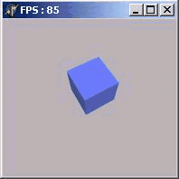

OpenGL в Delphi. Часть 1. Первые полигоны
Первая программа с использованием OpenGL
OpenGL ... Вам потребуется Borland DELPHI v.3-5 и
OPENGl32.DLL Начнём, пожалуй! Для начала скачайте пример ... и посмотрите
на его работу... Если Вы видели ВРАЩАЮЩИЙСЯ КУБ,то я Вас поздравляю! Вы только-что
запустили Вашу первую программу на OpenGL!!.
А теперь самое интересное начнём разбор полётов...
Нет, если Вы скачали пример, то бросать это не стоит ЗДЕСЬ ВСЁ ПРОСТО.
Откройте новый проект: File -> New -> Application; У Вас успехи (шутка).
Теперь в директиву "uses" добавьте "OpenGL" вот так:
uses
Windows, Messages, SysUtils, Classes, Graphics, Controls, Forms,
Dialogs,ExtCtrls,OpenGL, //Подключаем OpenGL32.dll,
dglut;//модуль для рисования правильных объектов одной строкой кода
Прекрасно!
Создайте обработку таких процедур в Object Inspector - > Events
(я,надеюсь, что вы знакомы с Delphi):
procedure FormCreate(Sender: TObject);
procedure FormDestroy(Sender: TObject);
procedure FormResize(Sender: TObject);
А теперь в разделе private сделайте следующее
procedure Initsvet;
procedure SetPixFormat;// формат пукселя
procedure Draww;
procedure WMPaint( var Msg: TWMPaint );// похожа на OnPaint
message WM_PAINT; // сообщение от OnPaint
В разделе private
обьявим...:
DC:HDC; // переменные для получения контекста воспроизведения
hrc:HGLRC; //
Angle:GLfloat; // угол, на который будет поворачиваться куб
procedure initsvet;
procedure SetPixFormat;
В разделе protected
обьявим...:
procedure WMPaint(var Msg: TWMPaint); message WM_PAINT;
просто вот так всё и пишите, компилятор не обидится!!
В качестве константы объявим:
const MaterialColor: Array [0..3] of GLfloat = (0.3, 0.4, 1.0, 1.0);
Оформим процедурки:
procedure TForm1.FormCreate(Sender: TObject);
begin
Angle := 0;
DC := GetDC(Handle); // получить окно
SetPixFormat; // установим формат пикселя
hrc := wglCreateContext(DC);
wglMakeCurrent(DC, hrc); // сделаем "текущим контекст воспроизведения
Initsvet; // включим свет
glMaterialfv(GL_FRONT, GL_AMBIENT_AND_DIFFUSE , @MaterialColor);
glMatrixMode(GL_MODELVIEW);
Timer1.Enabled := True; // включим таймер
GLShadeModel(GL_SMOOTH);
end;
procedure TForm1.initsvet;// СВЕТ //
const
fogColor : array[0..3] of GLfloat = (0.7, 0.7, 0.7, 2.0);
var
fogMode : GLint;
begin
glEnable(GL_DEPTH_TEST); // разрешить тест глубины
glEnable(GL_LIGHTING); // разрешить освещённость
glEnable(GL_LIGHT0); // включить нулевую лампу
end;
procedure TForm1.SetPixFormat;
var
nPixelFormat: Integer;
pfd: TPixelFormatDescriptor;
begin
FillChar(pfd, SizeOf(pfd), 0);
with pfd do
begin
nSize := sizeof(pfd);
nVersion := 1;
dwFlags := PFD_DRAW_TO_WINDOW or
PFD_SUPPORT_OPENGL or
PFD_DOUBLEBUFFER;
iPixelType:= PFD_TYPE_RGBA;
cColorBits:= 24;
cDepthBits:= 32;
iLayerType:= PFD_MAIN_PLANE;
end;
nPixelFormat := ChoosePixelFormat(DC, @pfd);
SetPixelFormat(DC, nPixelFormat, @pfd);
end;
procedure TForm1.WMPaint(var Msg: TWMPaint);
var
ps : TPaintStruct;
begin
BeginPaint(Handle, ps);
glClear(GL_COLOR_BUFFER_BIT or GL_DEPTH_BUFFER_BIT); //очистить цветовой буфер, и буфер глубины
glClearColor(0.7,0.7,0.7,0.0); // очищать экран серым цветом
glLoadIdentity; // загрузить матрицу
glTranslatef(0.0, 0.0, -9.0);
glRotatef(Angle / (random (1) + 1), 1.0, 0.0, 0.0);
glRotatef(Angle , 0.0, 0.0, 1.0); //
glpushmatrix; // сохраним текущу систему координат
glutsolidcube(2); // нарисуем куб с ребром 2
glpopmatrix; // восстановим систему координат
SwapBuffers(DC); // перевернём передний и задний буферы
EndPaint(Handle, ps);
end;
procedure TForm1.Timer1Timer(Sender: TObject);
begin
Angle := Angle + 1.0; // увеличиваем угол
If (Angle >= 360.0) then Angle := 0.0; // если совершён полный оборот, то вернуть в 0
InvalidateRect(Handle, nil, False); // перерисовать окно
end;
procedure TForm1.FormResize(Sender: TObject);
begin
glMatrixMode(GL_PROJECTION); // модель матрицы проекционная
glLoadIdentity; // загрузить матрицу
gluPerspective(60.0, Width / Height, 1.0, 10.0);
glViewport(0, 0, Width, Height); // область вывода весь экран
glMatrixMode(GL_MODELVIEW); // модель матрицы перспективная
InvalidateRect(Handle, nil, False); // перерисовать всё окно
end;
procedure TForm1.FormDestroy(Sender: TObject);
begin
Timer1.Enabled := False;
wglMakeCurrent(0, 0); // сделать контекст "текущим"
wglDeleteContext(hrc); // удалить контекст воспроизведения
ReleaseDC(Handle, DC); // удалить окно
end;
А теперь запускаем!!!!

Вот и всё!